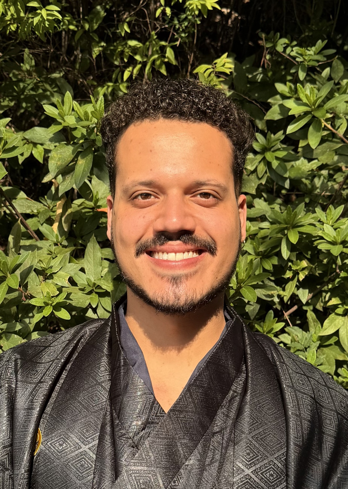

Operational quality improvement
Through targeted coaching, performance monitoring and workflow improvements.
DUBLIN, IRELAND / GLOBAL MINDSET
I'm Igor. I lead people, improve operations and explore what technology can make possible.
Operations & Service Delivery Leader · Technical Operations · BSc (Hons) Computing
Coordinating four Team Leaders supporting 60+ reviewers across seven regional operations.

01 / IMPACT
Selected outcomes from my operations and AI experience.
Through targeted coaching, performance monitoring and workflow improvements.
Across seven regional operations through four Team Leaders.
In three weeks after introducing a new case triage process.
Employees who progressed into Team Leader positions within 12 months.
02 / MY STORY
Moving countries, leading people and turning new skills into practical work.
I grew up in the countryside of Bahia, Brazil, and moved to Ireland at 20 without knowing anyone here, driven by a dream of exploring the world and learning through new experiences. Eleven years later, Dublin is still my home, and that same spirit of discovery continues to shape my life and career.
My first years in Ireland took me through restaurants and pubs. By 23, I had become a manager and discovered how much I enjoyed helping people develop, solve problems and work together. To build on that experience, I studied Computing at the National College of Ireland from 2019 to 2023, developing a strong interest in programming and cybersecurity.
At Covalen, my work progressed from market operations and legal escalations into generative AI and operations leadership. Today, I bring people leadership and technical skills together through coaching, reporting automation and collaboration with engineering teams to improve quality and resolve operational problems.
AI is my current focus. Alongside AI evaluation work with Mercor, I am learning to build and manage agents and experimenting with AI video creation through School Bot. Outside work, I have explored 38 countries and destinations across four continents and hope to share those experiences through a travel channel. I speak Portuguese, English and Spanish, and I am studying Italian and Japanese.
I want to bring this combination of leadership, operational experience and technical skills to teams working in AI operations and technical delivery, helping people grow and turning complex problems into clear, practical action.
03 / SELECTED WORK
Explore the contribution, approach and outcome behind the work.
Operational reporting should help leaders spot problems early, not consume hours of their time. I developed Google Sheets and AI-assisted workflows to bring performance, quality, team coverage and absence information into a more consistent reporting process.
Explore the work +Operational information was spread across multiple trackers and reporting processes. Bringing that information together required repetitive administrative work, making it harder for Team Leaders to focus on performance and coaching.
I developed reporting and performance-tracking tools using Google Sheets and AI-assisted workflows. The aim was to make important operational information easier to access, reduce repetitive tasks and support more consistent reporting. The tools covered performance monitoring, quality, team coverage and absence tracking.
The improvements reduced recurring administrative work, saving Team Leaders several hours each week. The practical value was giving leaders more time for coaching, decision-making and operational issues.
Developing future leaders is one of the most rewarding parts of my work. Through coaching, clear expectations and practical support, I've helped three employees progress into Team Leader roles within 12 months.
Explore the work +Growing operations need people who can take responsibility, make sound decisions and support others. Strong individual performance alone does not prepare someone to lead a team.
I supported employees preparing for leadership responsibilities through coaching, feedback and practical guidance. My approach focuses on performance expectations, clear communication, operational judgement and confidence in decision-making.
Three employees I coached progressed into Team Leader positions within 12 months. Leadership development helped build capability and continuity within the operation.
I supported an AI operations programme as it grew from fewer than 20 to more than 200 specialists, combining team supervision, technical investigations and more consistent quality processes.
Explore the work +As an AI operations programme grows, maintaining consistent quality and resolving technical issues becomes more complex. Teams need clear processes, reliable documentation and effective communication between operations and Engineering.
As Acting Team Lead, I supervised approximately 20 specialists and helped coordinate daily delivery. I worked with Engineering to investigate technical issues, review changes and verify fixes using GitHub, GitLab, TypeScript and SQL. I also contributed to standardising quality checks, documentation and operational processes.
The programme expanded from fewer than 20 to more than 200 specialists during this period. My contribution focused on supervision, technical issue resolution and helping teams work consistently as the programme developed.
Performance problems don't always require more effort from the team. Sometimes the process itself needs to change. I use operational data and frontline feedback to identify where targeted improvements can make a difference.
Explore the work +A backlog of approximately 1,000 cases was affecting operational turnaround and making it harder to prioritise incoming work.
I designed and introduced a new case triage process to improve how outstanding work was assessed and prioritised. The approach gave the team a clearer way to organise cases and focus on work that needed attention.
The new process helped the operation clear approximately 1,000 outstanding cases in three weeks. The result demonstrates how changing the organisation of work can improve delivery without simply asking people to work faster.
04 / EXPERIENCE
From frontline operations to technical delivery and people leadership.
Covalen · Dublin · Client: Meta
Mercor · Remote · Independent contractor · Project-based
Alongside my operations leadership role, I contribute to project-based AI evaluation work in English and Portuguese. I review AI-generated documents, presentations and spreadsheets against detailed quality guidelines, identify and correct issues, and provide structured feedback and ratings. I have also completed hands-on agentic AI training, including creating and running an AI agent and reviewing its event flow and execution results.
Covalen · Remote · Client: Meta
Covalen · Remote · Client: Meta
Covalen · Dublin · Client: Meta
Showing 5 roles.
05 / CAPABILITIES
A practical mix of leadership, delivery and technical experience.
Multi-team leadership, coaching, performance management, capacity coordination, stakeholder communication and service delivery.
KPI reporting, quality monitoring, root cause analysis, escalation management, operational risk and process improvement.
Technical investigations, Git workflows, SQL, programming fundamentals, AI evaluation and workflow automation.
React, Python and JavaScript, including the Computing capstone.
National College of Ireland · 2019 - 2023
Capstone: a React/Python e-commerce platform with payment functionality.
06 / BEYOND THE JOB TITLE
What I'm exploring, creating and learning next.
I'm studying how to build and manage AI agents, exploring their event flows, execution results and the quality of their outputs.
My creative space for experimenting with AI video creation and sharing stories through educational content.
Explore School Bot ↗From growing up in Bahia to exploring 38 countries and destinations across four continents, travel has shaped how I see the world and connect with people. Each journey brings new cultures, stories and lessons to carry home.
England, Scotland, Wales and Northern Ireland are listed individually as destinations within the United Kingdom.
07 / THE NEXT CHAPTER
Interested in operations leadership, service delivery, technical operations or building stronger teams? I'd be glad to connect.